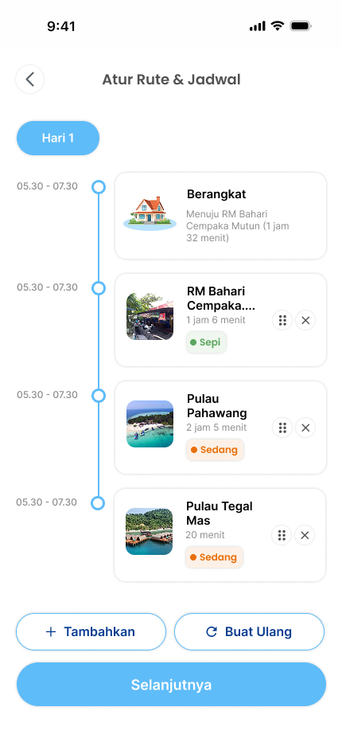
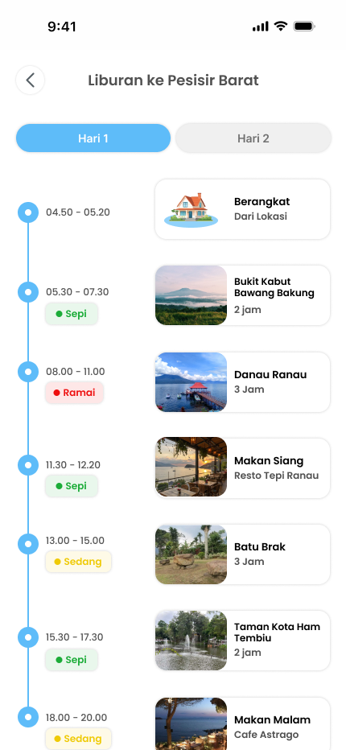
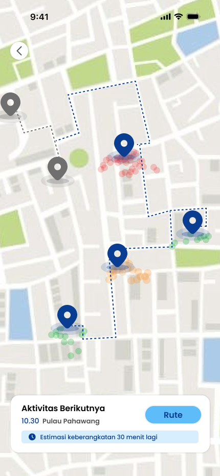

Jelajahi beragam keindahan wisata Lampung, temukan destinasi menarik yang belum pernah kamu kunjungi, dan rencanakan perjalanan seru sesuai keinginanmu bersama SmartTrip.



Lampung berada di ujung selatan Pulau Sumatera, dipisahkan dari Pulau Jawa oleh Selat Sunda. Lewat Pelabuhan Bakauheni, provinsi ini menjadi pintu masuk utama bagi siapa pun yang menyeberang dari Jawa ke Sumatera.
Luas daratan Lampung sekitar 35.288 km². Ibu kotanya adalah Bandar Lampung, dan provinsi ini terdiri dari 13 kabupaten dan 2 kota dengan jumlah penduduk lebih dari 9 juta jiwa. Semboyan daerahnya adalah Sai Bumi Ruwa Jurai.
Ruwa Jurai berarti “dua garis keturunan”, merujuk pada dua kelompok adat besar Lampung: Saibatin di wilayah pesisir dan Pepadun di wilayah pedalaman. Selain masyarakat adat, Lampung juga dihuni warga dari berbagai suku lain, terutama lewat program transmigrasi, sehingga budayanya beragam.
Membantu wisatawan mendapatkan rekomendasi destinasi wisata yang relevan dan sesuai preferensi.
Membantu wisatawan menyusun dan mengoptimalkan urutan rencana perjalanan (itinerary) secara efisien.
Terintegrasi langsung dengan data kunjungan dari aplikasi web untuk memprediksi tingkat kepadatan pengunjung di suatu destinasi, sehingga wisatawan dapat merencanakan perjalanan dengan lebih nyaman.


Aplikasi SmartTrip masih dalam tahap demo. Unduh langsung dengan memindai QR code menggunakan kamera HP kamu.
Ceritakan pengalamanmu memakai aplikasi. Masukanmu dipakai untuk memperbaiki rekomendasi destinasi, itinerary, dan prediksi kepadatan.
Form ini membuka aplikasi email kamu dan mengirim masukan ke info@smarttrip.dev.